DecisionTree
Source Code and Data
Text Decision Tree Part(Python Language)
I chose the text of Trump's tweets and divided the statements made before and after Trump was elected president into two categories, and tried to use a decision tree to classify the tweets made before and after Trump was elected president
Screenshot of the text data
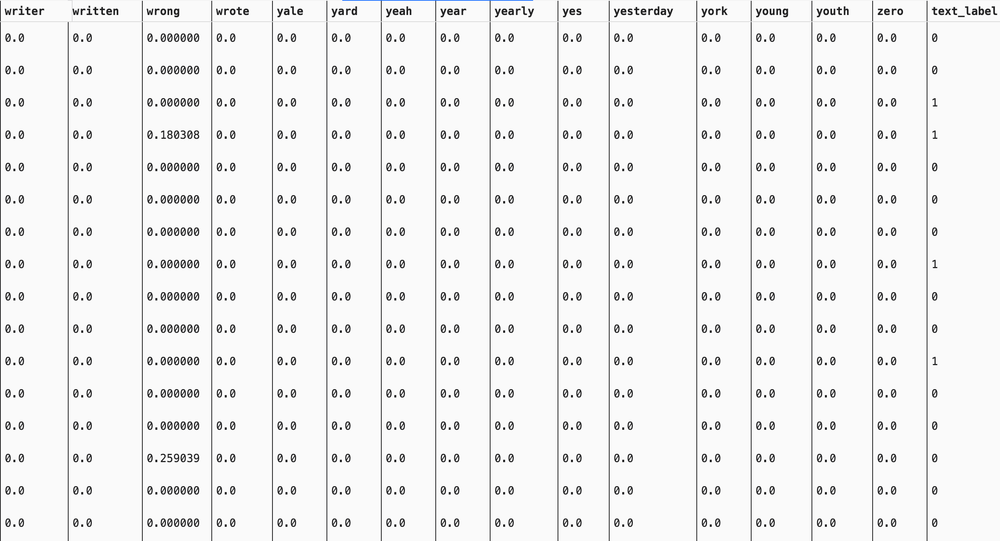
Tree 1
Accuracy on training set: 1.000
Accuracy on testing set: 0.727
If I do not limit the length of the decisio tree, we will find that the decision tree produces deep and unbalanced left-right decision trees in order to fit the long-tailed distribution samples, and such a model tends to overfit on the test set and cannot correctly predict whether Trump's remarks were made before or after he was elected president.
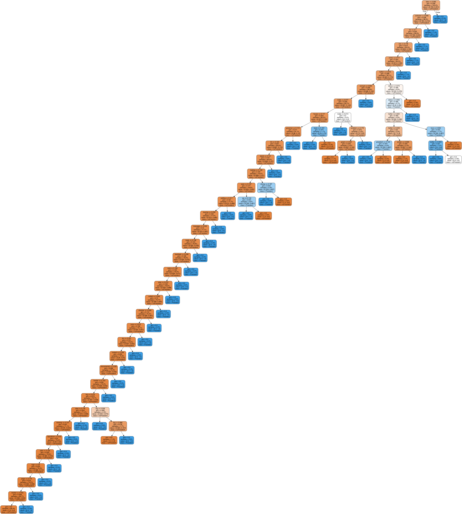
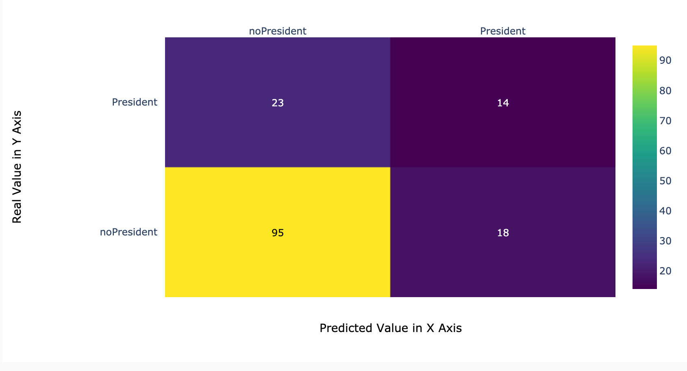
The confusion matrix reveals that Trump posted fewer tweets after the president-elect, but the model incorrectly discriminates tweets posted after the president-elect as pre-election tweets and tweets posted before the president-elect as post-election tweets, both of which make the model's performance in discriminating Trump's presidential-election tweets very poor
Tree 2
Accuracy on training set: 0.837
Accuracy on testing set: 0.787
To alleviate the problem of model overfitting, I restricted the maximum depth of the decision tree to 5 and retrained it. The result is a decision tree model more balanced than before, and the performance on the test set is improved, and the model performs more robustly on unknown data.It is worthwhile to trade the cost of reduced accuracy on the training set for a more robust model.
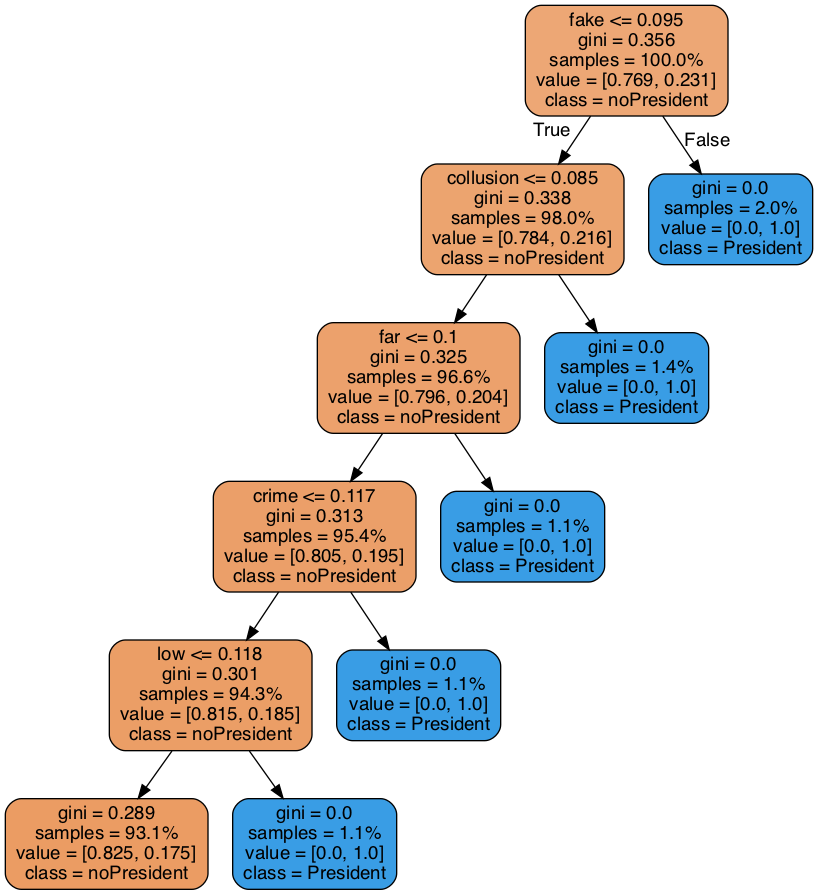 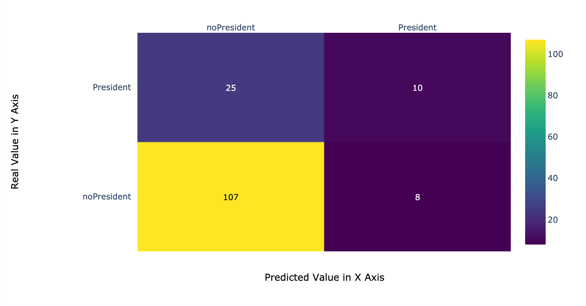
Despite the improvement in accuracy on the test set, the two types of errors mentioned above, as found by the confusion matrix, still did not improve very significantly, so the model's performance in judging Trump's tweets after he was elected president did not improve significantly.
Tree3
Accuracy on training set: 0.869
Accuracy on testing set: 0.780
I try to increase the vocabulary in the word list for decision tree training and keep the depth limit of 5 as the maximum tree depth to see if the classification performance of the decision tree will be improved.
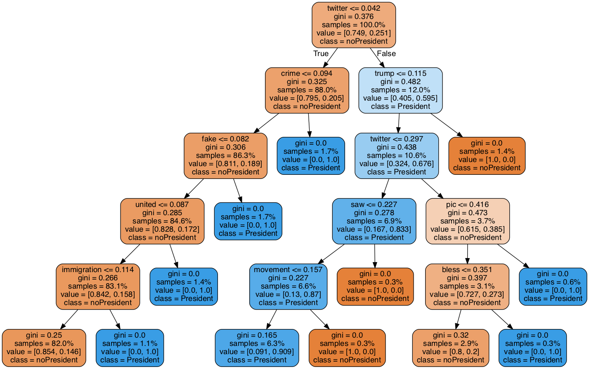
To my surprise, as can be judged from the accuracy values, increasing the number of words in the word list does not contribute to the improvement of the decision tree performance, and the confusion matrix provides the same result, with a high percentage of the two types of errors mentioned above committed by the model.To my surprise, adding words from the word list as training data does not improve the performance of the decision tree, which is known from the accuracy performance of the test set. In the confusion matrix, the probability of the two previously mentioned types of errors committed by the model does not decrease.
ELection Data Decision Tree Part(R Language)
I chose the 2016 US president election voted county data. And try to figure out that if the decision tree can use qualitative and quantitative data to distinguish between states that support Trump or Hillary Clinton.
Screenshot of the Mixed Data
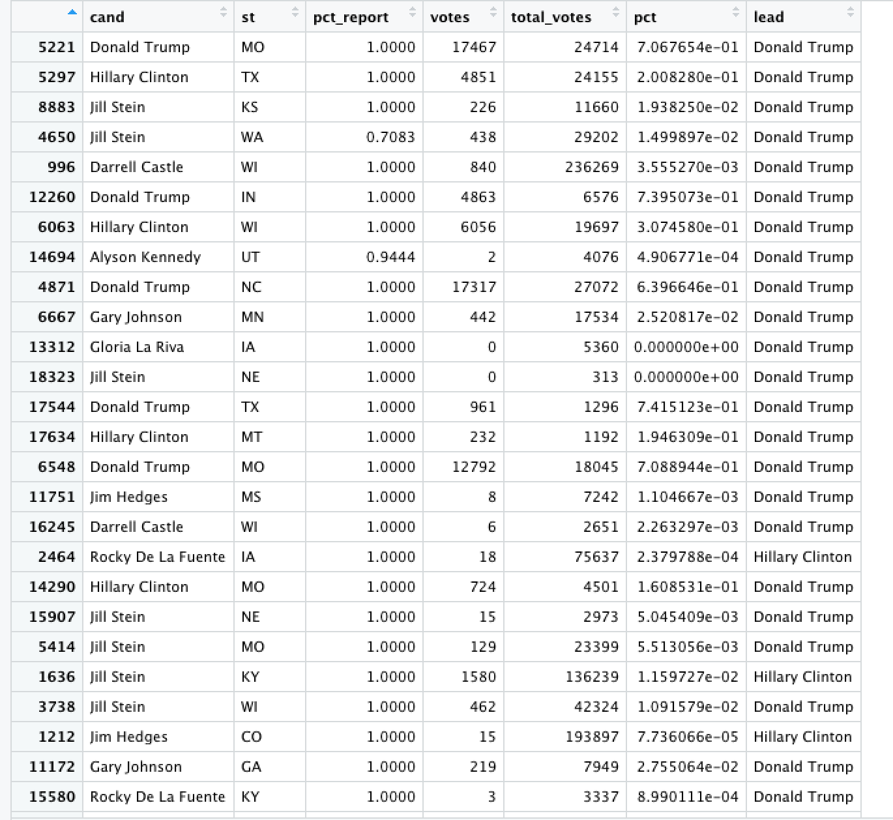
Tree 1
The first decision tree does not make any restrictions and uses default values. From the decision tree visualization, it can be found that the number of votes cast in each county can be used as an important basis for dividing Trump-supporting counties. The total number of state votes less than 102e+3 can divide 88% Trump-supporting counties. This also indicates that Trump supporters are mostly in remote and relatively sparse counties. Then there is the distribution of states to distinguish Trump and Hillary's support counties, which can be explained by the traditional Democratic and Republican support states, and therefore is one of the most important bases to divide Trump or Hillary's support counties. From the confusion matrix, it can be seen that the more serious mistake made by the model is to incorrectly consider Trump-supporting counties as Hillary-supporting counties. However, the election possesses uncertainty and cannot be predicted simply from a few indicators such as number of votes and states, which is understandable.
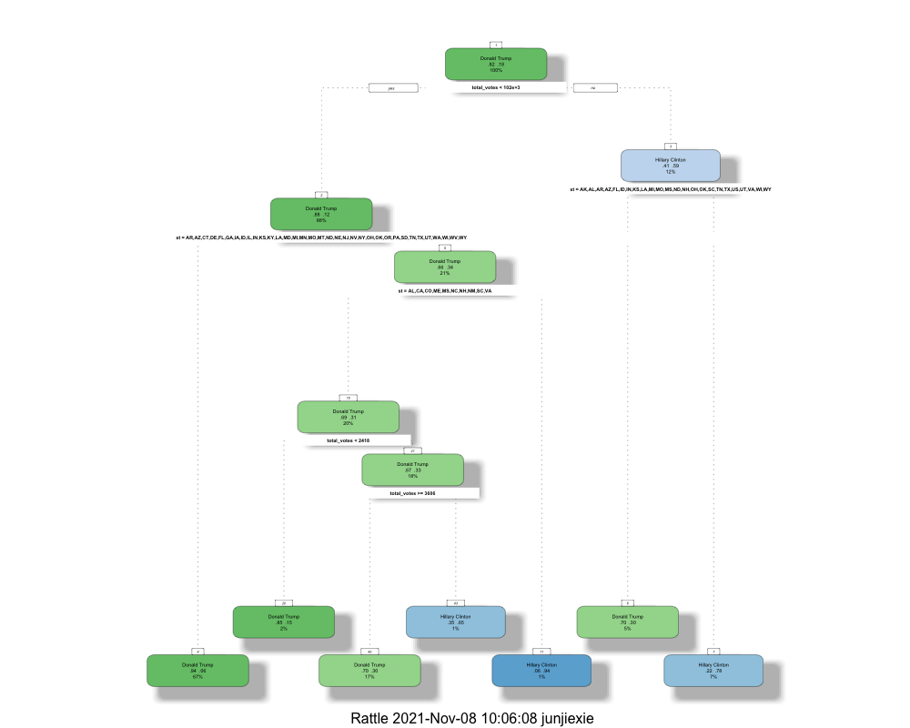 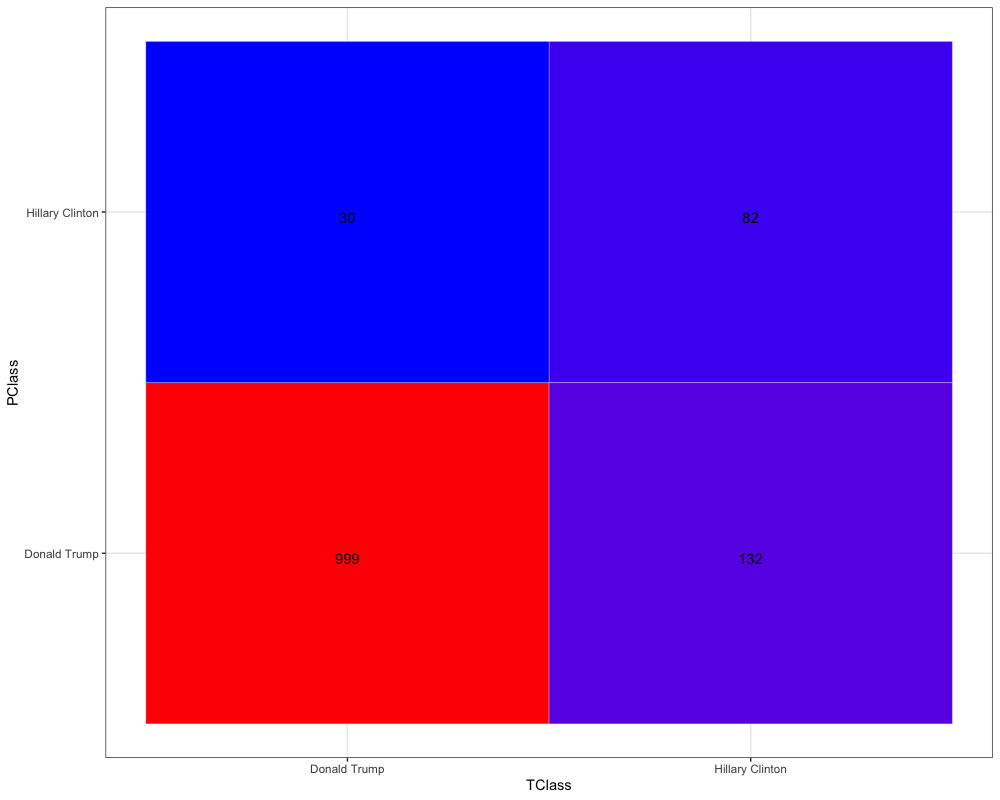
Tree 2
By reviewing the information, I found that the cp value is used to control the complexity of the decision tree. The default value is 0.01, and now changing the cp value to 0.05 limits the complexity of the tree, similar to the previous role of limiting the tree depth by building decision trees in python, trading the robustness of the model in the region at the expense of fitting accuracy in the training set. Although the confusion matrix shows that the performance of the decision tree in discriminating Hillary support counties does not improve, the reduced model complexity is worthwhile with no significant decrease in overall classification performance.
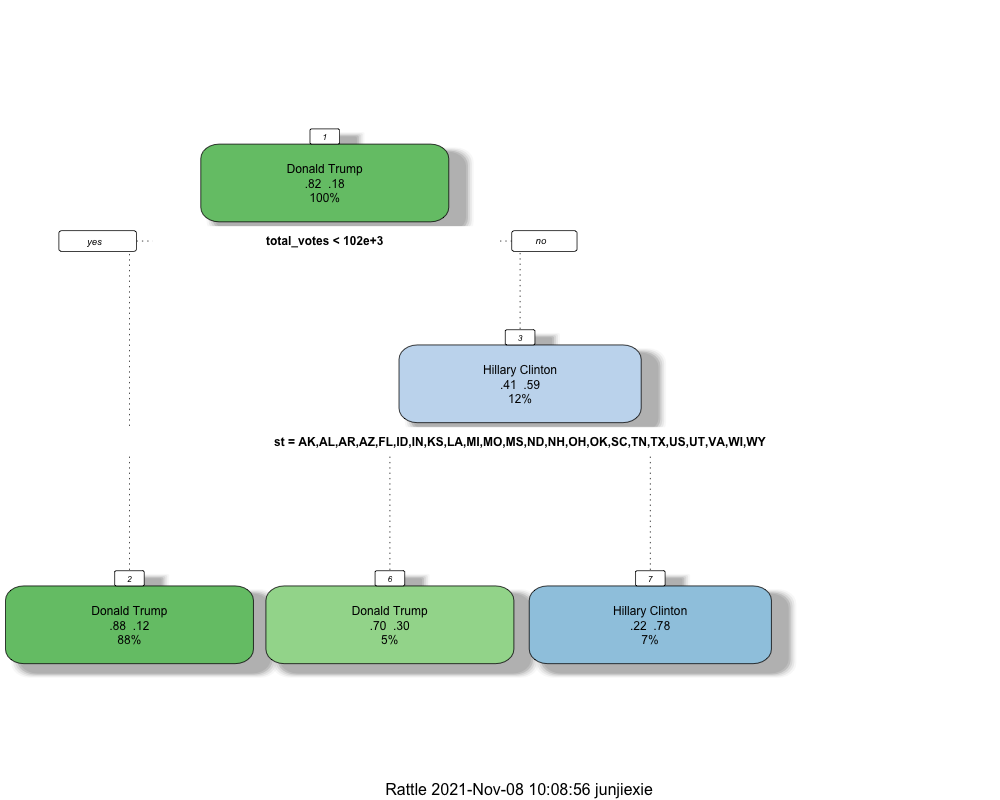 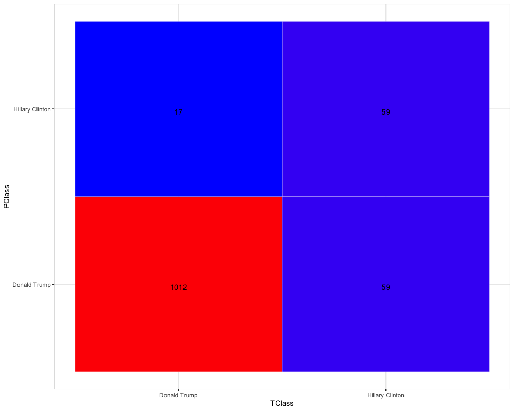
Tree 3
For the third decision tree, I discarded the state characteristics and chose only the number of county votes, the total number of state votes, and the percentage of votes collected. It was observed whether the classification performance of the decision tree would decrease. However, from the results, the decision tree achieves similar classification results as the first and second decision trees by precisely dividing the county vote intervals. The three different decision trees, all of which chose the total number of county votes as the most important classification feature. This indicates that there is a very strong association between the number of votes in the state and the supporters in the 2016 election.
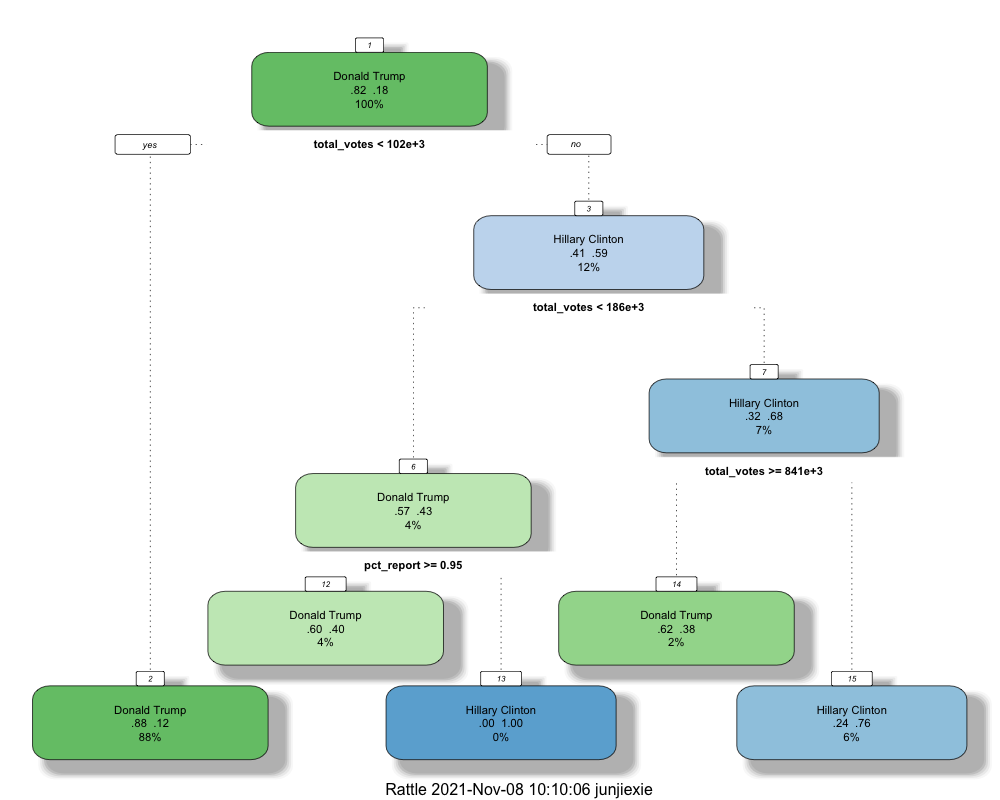